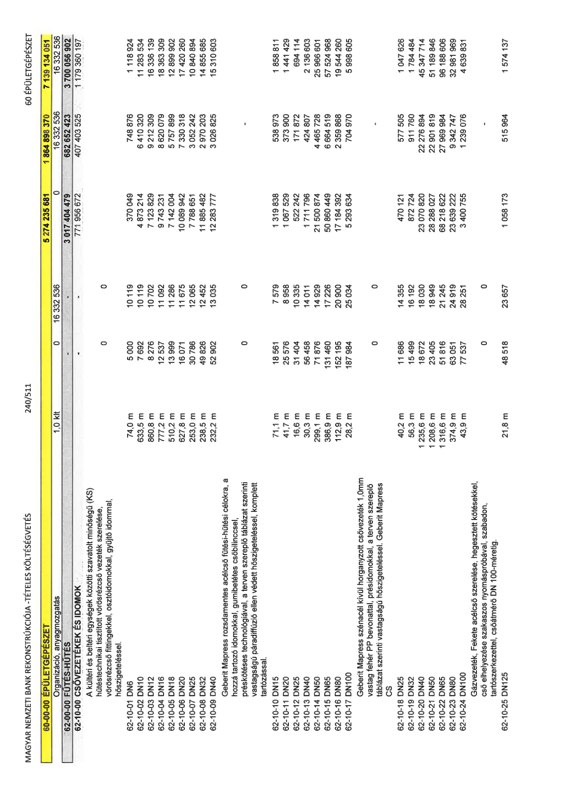

| Tétel | Menny. | Egys. | Anyag e.ár (net HUF) | Díj e.ár (net HUF) | Anyag összesen (net HUF) | Díj összesen (net HUF) | Anyag+Díj összesen (net HUF) |
|---|---|---|---|---|---|---|---|
| Organizáció, anyagmozgatás | 1,0 | klt | 0 | 16 332 536 | 0 | 16 332 536 | 16 332 536 |
| 62-00-00 FŰTÉS-HŰTÉS | 0 | 0 | 0 | 0 | 3 017 404 479 | 682 652 423 | 3 700 056 902 |
| 62-10-00 CSŐVEZETÉKEK ÉS IDOMOK | 0 | 0 | 0 | 0 | 771 956 672 | 407 403 525 | 1 179 360 197 |
| A kültéri és beltéri egységek közötti szavatolt minőségű (KS) hűtéstechnikai tisztított vörösrézcső vezeték szerelése, vörösrézcső fittingekkel, osztóidomokkal, gyűjtő idommal, hőszigeteléssel. | 0 | 0 | 0 | 0 | 0 | 0 | 0 |
| 62-10-01 DN6 | 74,0 | m | 5 000 | 10 119 | 370 049 | 748 876 | 1 118 924 |
| 62-10-02 DN10 | 633,5 | m | 7 692 | 10 119 | 4 873 214 | 6 410 320 | 11 283 534 |
| 62-10-03 DN12 | 860,8 | m | 8 276 | 10 702 | 7 123 829 | 9 212 309 | 16 336 139 |
| 62-10-04 DN16 | 777,2 | m | 12 537 | 11 092 | 9 743 231 | 8 620 079 | 18 363 309 |
| 62-10-05 DN18 | 510,2 | m | 13 999 | 11 286 | 7 142 004 | 5 757 899 | 12 899 902 |
| 62-10-06 DN20 | 627,8 | m | 16 071 | 11 675 | 10 089 942 | 7 330 318 | 17 420 260 |
| 62-10-07 DN25 | 253,0 | m | 30 786 | 12 065 | 7 788 651 | 3 052 242 | 10 840 894 |
| 62-10-08 DN32 | 238,5 | m | 49 826 | 12 452 | 11 885 482 | 2 970 203 | 14 855 685 |
| 62-10-09 DN40 | 232,2 | m | 52 902 | 13 035 | 12 283 777 | 3 026 825 | 15 310 603 |
| Geberit Mapress rozsdamentes acélcső fűtési-hűtési célokra, a hozzá tartozó idomokkal, gumibetétes csőbilinccsel, préskötéses technológiával, a terven szereplő táblázat szerinti vastagságú páradiffúzió ellen védett hőszigeteléssel, komplett tartózással. | 0 | 0 | 0 | 0 | 0 | 0 | 0 |
| 62-10-10 DN15 | 71,1 | m | 18 561 | 7 579 | 1 319 838 | 538 973 | 1 858 811 |
| 62-10-11 DN20 | 41,7 | m | 25 576 | 8 958 | 1 067 529 | 373 900 | 1 441 429 |
| 62-10-12 DN25 | 16,6 | m | 31 404 | 10 335 | 522 242 | 171 872 | 694 114 |
| 62-10-13 DN40 | 30,3 | m | 56 458 | 14 011 | 1 711 796 | 424 807 | 2 136 603 |
| 62-10-14 DN50 | 299,1 | m | 71 876 | 14 929 | 21 500 874 | 4 465 728 | 25 966 601 |
| 62-10-15 DN65 | 386,9 | m | 131 460 | 17 226 | 50 860 449 | 6 664 519 | 57 524 968 |
| 62-10-16 DN80 | 112,9 | m | 152 195 | 20 900 | 17 184 392 | 2 359 868 | 19 544 260 |
| 62-10-17 DN100 | 28,2 | m | 187 984 | 25 034 | 5 293 634 | 704 970 | 5 998 605 |
| Geberit Mapress szénacél kívül horganyzott csővezeték 1,0mm vastag fehér PP bevonattal, présidomokkal, a terven szereplő táblázat szerinti vastagságú hőszigeteléssel. Geberit Mapress CS | 0 | 0 | 0 | 0 | 0 | 0 | 0 |
| 62-10-18 DN25 | 40,2 | m | 11 686 | 14 355 | 470 121 | 577 505 | 1 047 626 |
| 62-10-19 DN32 | 56,3 | m | 15 499 | 16 192 | 872 724 | 911 760 | 1 784 484 |
| 62-10-20 DN40 | 1 235,6 | m | 18 672 | 18 030 | 23 070 820 | 22 276 894 | 45 347 714 |
| 62-10-21 DN50 | 1 208,6 | m | 23 405 | 18 949 | 28 288 027 | 22 901 819 | 51 189 846 |
| 62-10-22 DN65 | 1 316,6 | m | 51 816 | 21 245 | 68 218 622 | 27 969 984 | 96 188 606 |
| 62-10-23 DN80 | 374,9 | m | 63 051 | 24 919 | 23 639 222 | 9 342 747 | 32 981 969 |
| 62-10-24 DN100 | 43,9 | m | 77 537 | 28 251 | 3 400 755 | 1 239 076 | 4 639 831 |
| Gázvezeték, Fekete acélcső szerelése, hegesztett kötésekkel, cső elhelyezése szakaszos nyomáspróbával, szabadon, tartószerkezettel, csőátmérő DN 100-méretig. | 0 | 0 | 0 | 0 | 0 | 0 | 0 |
| 62-10-25 DN125 | 21,8 | m | 48 518 | 23 657 | 1 058 173 | 515 964 | 1 574 137 |
